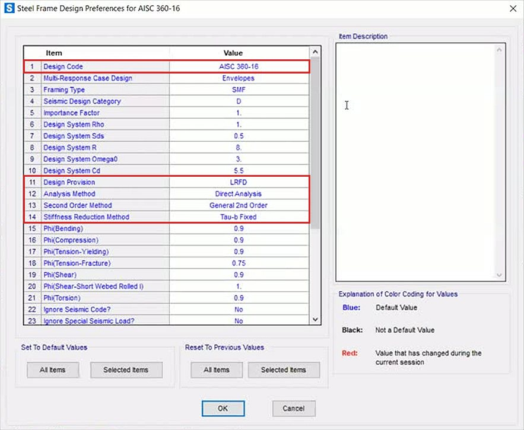

Bài 12.1. Preferences Design preferences (Steel Frame Design, AISC 360-10)
Preferences quyết định SAP2000 kiểm tra theo LRFD hay ASD, phân tích ổn định theo phương pháp nào và hiện màu đỏ ở tỷ số bao nhiêu. Khai báo sai một dòng có thể làm sai toàn bộ kết quả thiết kế.
- Chọn đúng Framing Type, Design Provision, Analysis Method và Stiffness Reduction cho nhà xưởng.
- Hiểu ý nghĩa của Stress Ratio Limit và các giới hạn võng mặc định.
1. Tình huống
Mô hình mẫu NM DNP-21.04 của nhà máy DNP đặt Framing Type = SMF, Design Provision = ASD và Stiffness Reduction = "No Modification". Trước khi in bảng kết quả vào thuyết minh, kỹ sư phải rà lại từng dòng Preferences theo Bảng 12.1.
2. Nội dung chính
Preferences
| Tham số | Giá trị khuyến nghị cho nhà xưởng | Mô hình giảng viên (NM DNP) | Ghi chú |
|---|---|---|---|
| Multi-Response Case Design | Envelopes | Envelopes | |
| Framing Type | OMF (khung), OCBF (giằng) | SMF | SMF đòi hỏi các yêu cầu kháng chấn của AISC 341 (chi tiết liên kết, tỷ lệ cấu kiện), không phù hợp nhà tiền chế thông thường |
| Seismic Design Category | Theo ASCE 7 Chương 11 | D | Chỉ ảnh hưởng khi bật kiểm tra kháng chấn |
| Design Provision | LRFD (hoặc ASD) | ASD | Phải thống nhất với bộ tổ hợp đã chọn |
| Analysis Method | Direct Analysis | Direct Analysis | Xem Chương 11 |
| Second Order Method | General 2nd Order | General 2nd Order | |
| Stiffness Reduction Method | Tau-b Fixed | No Modification | Cần giảm độ cứng theo C2.3 |
| Notional Load Coeff. | 0,002 | 0,002 | |
| $\phi_b$, $\phi_c$, $\phi_t$ (yield), $\phi_v$ | 0,90 (LRFD) | – | ASD: $\Omega_b = \Omega_c = 1{,}67$; $\Omega_v = 1{,}67$ (1,50 với I cán thỏa G2.1a) |
| Stress Ratio Limit | 0,95 | 0,95 | Thanh có ratio lớn hơn giới hạn sẽ hiện màu đỏ |
| Check Deflection | Yes | Yes | |
| DL / SDL+LL / LL / Total / Net ratio | 120 / 120 / 360 / 240 / 240 (mặc định) | như mặc định | Nên sửa theo yêu cầu dự án. Tham khảo IBC Bảng 1604.3 (cấu kiện mái không đỡ trần): $L/180$ với $L_r$ (hoặc S), $L/120$ với D + $L_r$ (xem Chương 14) |
Bảng 12.1. Preferences – AISC 360-10
3. Thực hành SAP2000
Trình tự
- Define → Materials: thép A572 Gr50 ($F_y = 345$ MPa, $F_u = 450$ MPa), A36 ($F_y = 250$ MPa) hoặc khai báo SS400 ($F_y = 245$ MPa), kèm $R_y$, $R_t$.
- Design → Steel Frame Design → Select Design Code: AISC 360-10.
- View/Revise Preferences (mục 12.2).
- Select Design Combos (mục 12.3).
- Chọn cấu kiện → View/Revise Overwrites (mục 12.4).
- Start Design/Check of Structure (Shift+F5).
- Đọc kết quả (mục 12.5), tối ưu, chạy lại.
- Design
- Steel Frame Design
- View/Revise Preferences
- Design Code, Design Provision, Analysis Method

4. Lỗi thường gặp
- Để Framing Type = SMF cho khung nhà tiền chế: SAP áp các yêu cầu kháng chấn của AISC 341 không phù hợp.
- Giữ nguyên giới hạn võng mặc định (L/240, L/360…) mà không đối chiếu yêu cầu dự án.
5. Luyện tập
Framing Type khuyến nghị cho khung ngang nhà xưởng tiền chế thông thường là:
Gợi ý
OCBF dùng cho hệ giằng.
Lời giải
Khung: OMF; giằng: OCBF. SMF đòi hỏi các yêu cầu kháng chấn của AISC 341.
Preferences để Total ratio = 240. Giới hạn võng toàn phần SAP dùng cho một dầm nhịp 12 m là bao nhiêu?
Gợi ý
Giới hạn = $L/240$.
Lời giải
$12\,000/240 = 50$ mm.
Kèo có $\phi M_n = 562{,}2$ kNm, chỉ chịu uốn. Stress Ratio Limit = 0,95. Mô men $M_u$ lớn nhất là bao nhiêu để thanh chưa hiện màu đỏ?
Gợi ý
Thanh hiện đỏ khi tỷ số lớn hơn Stress Ratio Limit.
Lời giải
$M_u \le 0{,}95 \times 562{,}2 = 534{,}1$ kNm.
- Nhà xưởng: OMF (khung), OCBF (giằng); Direct Analysis, General 2nd Order, Tau-b Fixed, hệ số notional 0,002.
- Design Provision phải thống nhất với bộ tổ hợp; Stress Ratio Limit 0,95 là ngưỡng hiện màu đỏ.
- Trình tự: vật liệu → chọn AISC 360-10 → Preferences → Design Combos → Overwrites → chạy (Shift+F5) → đọc kết quả.